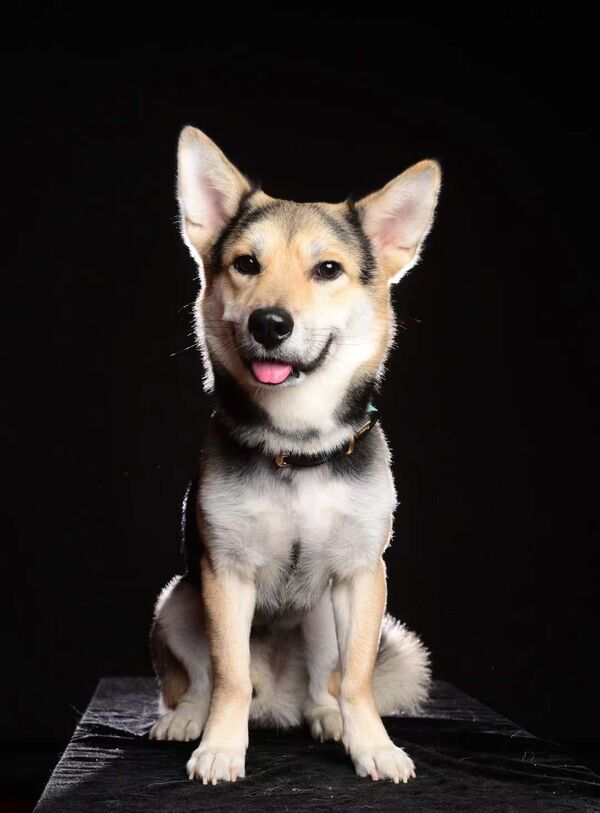
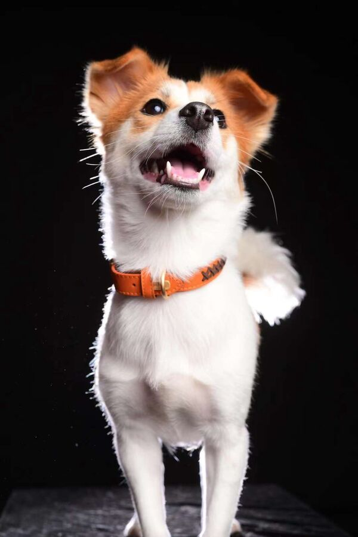

Pidan 皮蛋 · century egg
- Breed
- Tugou, a Chinese rural dog
- From
- Huangshan, China
- Mode
- Shy and nervous
- Hobby
- Ripping up paper
- Best friend
- Doufu
- Stamps
 CHINA
CHINA USA
USA CANADA
CANADA SPAIN
SPAIN ITALY
ITALY- Status
- Good boy
Two rescue dogs from Huangshan, China, who now travel the world with me and Player 2. They're the reason I keep volunteering, so more dogs get the same ending.


Everything they do in here is something they really do. Doufu wants to be chased. Pidan wants you to stop looking at him.
A nod to the old desktop cat that chased your mouse. Move around the box and she runs after you. Stop, and she sits, then naps.
Being chased is her favourite thing. Corner her against a wall to catch her. Pidan only peeks out of his box when you're far away.
Toss one and Doufu catches it before it lands. Leave one by the box and Pidan only comes out if you keep still. Wait too long and Doufu steals it.
China has no national animal-protection law of the kind most countries take for granted. Cruelty to dogs and cats often goes unpunished, so abuse is sadly more common, and in some rural provinces dogs are still eaten.
I work alongside other volunteers in Shenzhen and in Anhui province. We rescue dogs, get them to a vet, have them neutered, then feed them, clean them and train them until they're ready to meet families at adoption events.
Pidan and Doufu are two of those dogs. Both came from Huangshan, in Anhui, and both came home with me.
You can help from anywhere. Adopt, foster, donate, or come and volunteer. Tell me which and I'll put you in touch with the rescues I work with.
Recovered from two very different hard drives. Same day, same apartment.